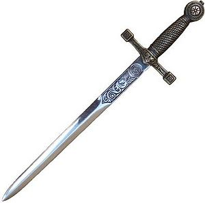

SoulCalibur
 De: La Frikipedia, la enciclopedia extremadamente seria.
De: La Frikipedia, la enciclopedia extremadamente seria.
De la serie Videojuegos:
SoulCalibur

apuesto 100 leros a puedes mirar esto todo el dia
| Desarrollado por:
|
Mamco
|
| Distribuido por:
|
Segata Sanshiro
|
| Diseñado por:
|
Ozaki Masamune
|
| Motor
|
V3
|
| Género(s)
|
Darse hostias con objetos punzocortantes
|
| Fecha de lanzamiento:
|
199X
|
| Modos de juego:
|
Arcada e Historia
|
| Requisitos:
|
ser excesivamente Friki
|
| Disponible en:
|
todas las generaciones de play station y X-BOX y una de SEGA
|
| Formatos:
|
CD y Disney DVD
|
| Edades:
|
desde que sepas que un cuchillo, espada, sable y sus derivados son armas letales
|
| Puntuaciones:
|
Spotrts Ilustrated: 9/10
|
este juego puede causar Garrotismo
Soulcalibur es una saga de videojuegos de lucha, de la compañía Manco de Lepanto (creadora también de la saga Tekken), basado en luchas con armas.
Historia
 La susodicha espada Soul Calibur(foto tomada a escala de 1/345)
Todo el follón este de juego transcurre en una especie de edad media, a medio camino entre la realidad y un parque temático dedicado a Tolkien.
La historia del juego gira en torno al Choul Eig, un par de espadas malignas que absorben las almas de sus enemigos. Las espadas tienen mente propia, y poseen las mentes y cuerpos de todo aquel que las empuña. Solo aquellos con gran control mental pueden usarlas sin ser afectados por su mal karma, actualmente son empuñadas por el pirata español Servantes de León (Weeee paisano!!).
Pero claro como la envidia es muy mala, pues luchadores de todo el mundo están buscando al españolito para forrarle a hostias y quitarle las espaditas, las cuales se cree que fueron usados en su día por Chuck Noris como palillos para las aceitunas..
Servantes les metió de yoyas a todos los frikis que intentaron mangonearle la Choul Eig, hasta que apareció la enviada del dios Hapestus, Sopita, la griega de bamboleantes senos y minuscula minifalda. Servantes pierde el combate al perder gran cantidad de sangre (de echo no la perdió, pero se acumulo toda en un punto al ver la minifalda de Sopita) Sopita logra destruirle la espada corta (de Choul Eig que la otra espada no es en absoluto corta) pero es herida por los pedazos de la misma.
Antes que Servantes pudiera foll… Ajusticiarla, aparece Paki, una ninja (Kunoichi para otakus y demas fauna) que compra la ropa en la misma tienda que Camy del Chuper Estrífaitar Dó. Servantes termina teniendo un problema de falta de sangre en el colodrillo (por las razones antes mencionadas) asin que cae.
Creyéndolo muerto, Paki que es una lesbiana consumada se las pira con la inconsciente Sopita para jugar a los medicos. Mas tarde en ese instante un tal Sigfrid llega al puerto, el chico venia para retar a Servantes, pero el pobre en lugar de espada cogió la tabla de planchar de su casa. Servantes se lo pule en un instante para acto seguido marcharse a la carrera tras Sopita y Paki. Tan cachon… concentrado iba en su búsqueda que se deja atrás la Choul Eig.
Sigfrid, que tiene mas pluma que la almohada de Calimero, es un consumado coleccionista de símbolos fálicos (sino mirar el espadón de tres metros que lleva) se despierta y se queda la espada de Servantes, pero esto no le mola nada a la Choul Eig, la cual le posee completamente, le pone una armadura mas chula, le cambia el nombre en el registro civil por el de Naitmeir (pa tocarle la moral mas que nada) e intenta utilizarle para satisfacer sus ansias de conquistas femeninas.
Tres años después, Naitmeir inicia un tour por los mejores prostibulos de Europa. Muchos guerreros, atraídos por los prostibulos se lo encuentran, lo que da lugar a grandes batalla por poseer la Choul Eig.
Aún asin la consciencia de Sigfrid se impone a la de Naitmeir, arrepentido por haber yacido con mujeres e intentando volver a sus tendencias homosexuales desarrolla en soledad una poderosa mano izquierda, mediante una técnica nunca explicada (se cree que la técnica que empleo es el milenario “Agarre del mono” que en chino seria Kas-kar-sela)
Naitmeir esta a punto de convencer a Choul Eig de que lo que hace esta mal, que debería invitar a las chicas a cenas románticas, leerles poemas de amor y ponerles a Barry Whait. A punto esta de conseguirlo cuando aparecen Pililik, Chianwá, y Elvis Presley.. digo Machi.
Pero Machi, chulo de discoteca profesional no contaba con Manoloth, un portero de disco tope chungo al que siempre vacilaba, ambos entablan combate, pero como Manoloth posee una musculatura y una fuerza casi, casi equivalentes a una veintena parte de las de Chuck Norris, pues como que Elvis… digo Machi muere. Su ultimo deseo es que Pililik y Chianwá digan por ahí que murió tras ganar el combate.
Pililik, el monje que en vez de afeitarse la cocorota se depila el pecho y Chianwá, la lolita ninfomana mas famosa de toda china confrontan a Naitmeir, ambos consiguen con sus encantos distraer a la Choul Eig y a Sigfrid, parece que están a punto de vencer, pero en ese momento los años de abstinencia del portador de la espada hacen su efecto y Naitmeir se pega tal calentón que queda con todo el cuerpo consumido por las llamas.
Por increíble y estúpido que parezca, Naitmeir sigue vivo, aunque como ahora es un quemao llameante decide llamarse Infermo
Ante la aparición de Infermo la espada de Chianwá se revela como Choul Calibur, el opuesto de Choul Eig. Con lo que por fin nos enteramos de a que venia el titulo del videojuego.
Con la Choul Calibur, Chianwá derrota a Infermo, pero este escapa a través del agujero del guión y se lleva Choul Calibur.
Y asín pasa una buena temporada en que los mejores luchadores del mundo se dejan de giliflautadas y vuelven a sus trabajos como soldados, cazarecompensas, guardias, prostitu… en fin ya os hacéis a la idea.
Pero Naitmeir retorna y comienza una nueva gira sexual para restaurar a la pobre Choul Eig, mientras los fragmentos dispersos de la espada que Sopita se cargo en el primer juego atraen nuevos y viejos guerreros en su búsqueda, al revalorizarse en E-bay tras descubrir que pueden usarse como afrodisiaco.
Básicamente un paio llamado Rafael (si, si el cantante) confrontó a Naitmeir para poseer la Choul Eig y tener un suministro considerable de afrodisiacos, pero se vio derrotado y a punto de morir. Con sus ultimas fuerzas Rafael logra atravesar el ojo de Choul Eig (si, la espada tiene dos ojillos malirnos), jodida por la marranada, encima el homosexual de Sigfrid toma el control del cuerpo de Naitmeir. La Choul Calibur aparece no se sabe de donde y Sigfrid se la clava hasta el fondo a la pobre Choul Eig, con lo que ambas espadas quedan selladas.
Después se quita la armadura de Naitmeir y se marcha haciendo exhibicionismo.
Momentos después, un nigromante masoquista llamado Sarasalamel encuentra la armadura, y el alma de la espada maldita que escapó antes de ser sellada. Como se aburría le otorgó un nuevo cuerpo a cambio de que lo ayudará a arejuntar los fragmentos de la Choul Eig. Así Naitmeir renace y comienza a anunciar una gran orgia en Europa (en Alpurjas de Fuencalá) para todos los que posean fragmentos de la Choul Eig.
La trampa estaba tendida.
Personajes
- Juang Seung Kyung - Juang es un patriota coreano que estuvo al borde de la muerte al desarrollar un temible caso de hemorroides, provocado por pasarse tol santo día jugando al Gil Wars , al WOU y a otros juegos online. Como le recomendaron ejercicio se embarca en la búsqueda de Choul Eig para defender su país de los ataques de piratas que se copian los juegos. Usa como arma una espada china o Jian.
- Rocko Adams - El hijo del dueño de uno de los burdeles de los que Naitmeir se piro sin pagar, Rocko parte en busca de Choul Eig porque cree que la espada puede ayudarlo con su problema de impotencia que le avergüenza desde que era pequeño, debido a eso (y a un grave problema de zoofilia) cubre su rostro con caretas de animales compradas en el todo a un l’Euro de su barrio. Su arma en un Hacha capaz de talar el amazonas de dos tajos.
- Paki - Kunoichi proveniente de Japon. Lleva un traje muy pero muuy apretado de color rojo y se va por ahí a cazar demonios, Un buen día tras quitarse de encima a otro grupo de otakus babosos, Paki descubre que su arma mágica se está quedando sin pilas. Presumiendo que se debe a la influencia de un arma de mayor poder, Choul Eig, Taki se decide a buscar y destruirla. Su arma es una espada ninja o Ninjatou.
- Sopita Alexandra - Una guerrera griega que esta mas buena que el yogur, Oh diox, que piernas, y vaya domingas, essa cinturita mmh ¡Ah! Diox me pongo malo… Bueno os queda claro que es guapa ¿no? . Sopita recibe una revelación de Hapestus, dios basurero, para que destruya Choul Eig y evite que estalle la guerra, pues le tocaría a el limpiar los campos de batalla. Pelea usando una espada corta y un escudo, y una minifalda que usa a modo de distracción.
- Noeshino Mitchichirugi - Samurai y mercenario del Japón (pues como su nombre indica “Noes shino”). Mitchichirugi va en busca de un arma que sea lo suficientemente fuerte para derrotar a Chuck Norris (vaya fe que tiene el tipo). Su arma es una katana.
- Sigfrid Schttaufen - Mercenario del Imperio Romano. Sigfrid asesina a su padre durante una emboscada a su unidad, que regresaba derrotada de un partidillo de fútbol amistoso con el pueblo vecino. Sigfrid heredo la fortuna de papuchi, pero mas tarde debido a un tortazo de Obelix cayo en un estado de locura y apollardamiento, termino convenciéndose que otra persona asesino a su padre, por lo que busca Choul Eig para poder vengarse. Su arma es una gran espada con forma de tabla de planchar (Zweihander en el juego).
- Soing China - Hija del maestro de Juang, Sitagacha Tasekaka, China quiere demostrarle a su padre que posee la fuerza para defender Corea en las próximas olimpiadas informáticas. Ya que ella no puede ingresar debido a que es mujer, Soing China decide buscar Choul Eig para demostrar su fuerza. Su arma es una lanza.
- Lelo Long - Asesino proviniendo del Imperio Min-ga (China). Lelo Long busca Choul Eig para atraer a Mitchichirugi, que cree es el causante de la muerte de su amada Chie. Su arma es un nunchaku.
- Goldo - Un asesino italiano fan de Marilino Manson que ha vivido los últimos años en una tumba subterránea perteneciente a su difunto maestro. Goldo busca Choul Eig, el objeto más deseado por su maestro Verggi, para cumplir su último deseo y completar su colección. Pelea usando dos Katars.
Retrato de Cervantes cuando aun estaba vivo
-
Miguel deServantes de Leon - Sub-jefe del juego. Servantes es el actual dueño de Choul Eig, y reside en los restos de un puerto español consumiendo grandes dosis de porno, asin como el alma de aquellos que buscan la espada maligna. El usa dos espadas, la Choul Eig (Olé paisano) y la Gunblade de Squall.
- Pililik - Un huérfano criado en el templo de Ling-Neng de adoradores del Gran Hermano de China. La energía maléfica liberada por las grandiosas cantidades de marihuana que se consumían en el templo poseyó a todos los monjes, y estos comienzan a forrarse a hostias. Pililik fue rescatado por su colega Xianglian, pero se vio forzado a matarla cuando ella fue poseída por el club Zed y no dejaba de cantar los politonos de su mobil. Mas tarde fue salvado por Eich Master, Pililik se embarca en una misión para destruir Choul Eig y purificar el mal que posee en su cuerpo. Su arma es un báculo y su estilo es similar al de Seung Mina de la que se cree que son hermanos o algo.
- Machi - Un Borracho, que jugo demasiado al Monkey island y termino diciendo por ahí que era un pirata, Trataba de colarse siempre en la discoteca donde Manoloth curraba como segurata. Su arma es un nunchaku, y su estilo está fuertemente basado en el que posiblemente Lelo Long hubiera usado.
- Chai Xianghua - Una agente del Imperio Min-ga (China) enviada a buscar Choul Eig por órdenes imperiales, en realidad es la cachonda de su pueblo (en el que son unos frígidos de cuidado) No sabían como hacer que se largara y se inventaron el cuento ese de la Choul Eig. Ella se une a Pililik y Machi en su aventura. Su arma es una espada china o Jian uqe mas tarde se rebela como la Choul Calibur.
- Manoloth - Un golem de cera creado por un culto hereje de adoradores de “aquí hay tomate” bajo órdenes del dios de la guerra Ares W. Bush. Manoloth abandona su empleo de segurata de discoteca y ayuda a Naitmare a completar Choul Eig, pero planea robarla y quedársela el sólito. Usa como arma un hacha gigante, y su estilo es casi igual al de Rocko.
- Yochimichu - Basado en el Yochimichu de la otra franquicia de Manco, Tekken (TEKKa wEN Tournament) Miembro de un clan ninja asesinado por Oda Nobunaga, Yochimichu busca Choul Eig para poder conseguir su venganza. Usa como arma una katana junto a un sashimono (banderín), y su estilo está inspirado en su version Tekken 3', con algunos movimientos de Mitsurugi.
- Isabella Valentine (Ivy) - Hija de un barón inglés que gastó su fortuna y salud buscando Choul Eig, ella descubre la naturaleza maligna de la espada y decide destruirla por sus cojo… por sus padres. Ella se une a Naitmare, sin saber que es el dueño de Choul Eig (no es muy espabilada la chica) este le otorgó vida a su vibra… espada, Su arma es una espada segmentada que puede adoptar una forma de látigo (llamada Snake Sword espada serpiente, o el látigo de la tia-sado).
- Naitmare - Actual poseedor de Choul Eig. Naitmare es el alter ego de Sigfrid, poseído por la espada en busca de almas de nenas para recuperar su poder. Su arma es Choul Eig, que adoptó la forma de una gran espada (Zweihander) y su estilo está basado en el de Siegfried (logicó si son la misma persona ¿no?).
- Lizardoman (secreto) - Un antiguo enviado del dios basurero Hapestus convertido en hombre lagarto por el mismo culto que creó a Manoloth. Apoya al golem ayudando a Naitmare a restaurar Choul Eig. Lleva una hacha de mano y un escudo y su estilo es el mismo que Sophita, pero por que en realidad el es…
CONTINUARA
- Eich Maister (secreto) - Un misterioso ermitaño que conoce absolutamente todo sobre Choul Eig y Choul Calibur gracias a su mega conexión ADSL con la frikipedia. Él vive en una montaña cerca del templo Ling Neng y rehusa a hablar sobre su pasado. Entrenó a Pililik para luego enviarlo a destruir Choul Eig porque es demasiado vago como para ir el mismo. Como es un mangui de cuidado puede utilizar todas as armas del juego al azar.
- Infermo (jefe final) - El espíritu de Choul Eig, que aparece cuando la espada está en peligro de ser destruida. Sólo jugable en la versión para Dreamcast. Como Eich Master, Inferno puede usar cualquier arma del elenco al azar, pero, a diferencia de Eich Master, posee 3 golpes exclusivos que sólo él puede realizar: la colleja, la patada en los cojones y el capirotazo, los tres se consideran fatalities.
Archivo:Cassandra.jpg Cassandra compitiendo contra su hermana en quien esta mas jamona (y la competencia va MUY reñida)
- Cagandra Alexandra – versión lolita de.. Hermana menor de Sopita, Cagandra desea evitar que su hermana, ahora casada y con 2 hijos (recordad tomad siempre precauciones) siga siendo la única que chupe (cámara so malpensados) así que abandona sus obligaciones (su blog, su fotolog etc) y roba las armas de su hermana y se escapa en una misión propia para destruir Choul Eig de una vez. Usa las mismas armas que Sophitia.
- Talib - Una joven zacerdoticha de una aldea del sur de Asia que adora a los Wombats. Tras recibir un fragmento de Choul Eig, ella decide ir en busca de la espada para puti… purificarla. Talib pelea usando un par de tonfas y de momento nadie le ha plagiado su estilo.
- Dampierre - Este Gilipollas salió en la ultima entrega de Soul Calibur: Broken
AssDestiny y no es mas que un Payaso sin maquillaje, con eso lo digo todo
- Rafael Martos - Miembro de una prestigiosa familia de Jaén, Rafael es condenado por sus familiares tras de asesinar un hombre cantándole. Salvado por una joven huerfana y tambien cantante llamada Aimy, Rafael decide pagarle llevándosela con ella (T_TU). Tiempo después descubre la existencia de Choul Eig y decide usarlo para destruir el reaggeton y crear un mundo ideal para los cantantes casposos como el y Amy. Usa un rapier como arma y su estilo es casposo.
- Cucharade - Un conjunto de cucharas y demás cubertería que fue forjada con fragmentos de Choul Eig, consiguiendo así vida propia. Buscan a un ser conocido como Vajillade para reunirse una vez más. Elige al azar cualquier estilo del juego
- Nerdiderdid - Exclusivo de las versiones para consola, Nerdid es una monstruosidad deformada por la energía de Choul Eig, cuyo único objetivo es sembrar el caos. Su arma es una esfera de energía llamada Windows Vista, y su estilo es una mezcla de movimientos del resto del elenco del juego.
- Sarasalamel - Miembro de una tribu de nigromantes masoquistas ahora extinta, Sarasalamel posee el poder de reencarnarse cada vez que muere, aunque esto conlleve una pupita inimaginable. Al principio molaba, pero enloqueció tras ver año tras año reposiciones de verano azul, volviéndose emo. Así manipula los eventos del juego para conseguir la Choul Eig y la Choul Calibur con la esperanza de poder morir. Pelea usando una guadaña.
- Chochetsuka – La única japonesa rubia de Japón antes de que se inventaran los tintes, en realidad tampoco es japonesa, sino una huérfana que se crió en Japón. El hombre que le daba caña por las noches perdió en un duelo contra Mitchichirugi que no lo dejó usar su sable nunca más (Ouch!), Chochetsuka se embarca en un viaje para buscar a Mitchichirugi y vengar a su maestro/amante. Lleva un cuchillo jamonero oculto en una sombrilla.
- Fira - Una asesina sádica y bi-sexual que se convirtió en sirvienta de Naitmare. El cual no la debe pagar mucho a juzgar por los harapos que lleva. Se patea el mapamundi buscando un nuevo cuerpo para su maestro. Usa para pelear un hula-hop de acero con filo que consiguió en la fira de su pueblo (de ahí su nombre).
- Polcadan - Un antiguo experto en todas las armas, que fue maldito por los dioses tras asesinar de un cuesco un búho que era su mascota, ahora el tipo se pasea por los bares con cabeza y patas de búho. Generalmente esta tan borracho que no sabe ni quien es, de ahí que recibe al azar cualquiera de los estilos y armas de otros personajes del juego. Adora bailar la polca.
- Abiss - Zasalamel convertido en una especie de trabolo raro por el poder de la Choul Eige. Su nombre significa “Abuelo” en catalán.
- Nait Terror - El verdadero jefe final del juego. Nait Terror solo puede ser alcanzado siguiendo cierto camino y cumpliendo ciertos requisitos, tales como beber mucha hagua ates de ir a dormir. Su arma es Choul Eig completamente restaurada.
- Ezio Auditore - El es un maestro asesino de 1490 (mas o menos) se murio, pero revivio para matar a todos los frikis que aparecen en este juego.
Modo online
Aqui puedes enfrentarte a otros jugadores que, generalmente, cojen siempre el mismo personaje ( kilik , cerbantes o siegfried)por que son unos inutiles. Una tecnica muy utilizada en este modo es atacar y si ves que funciona , repetir el mismo ataque hasta ganar. Si, el juego recompensa cn la victoria al que haga el mismo ataque mil veces seguidas( como veis aqui prima la habilidad pura y dura)
|
|
 Shooter Shooter
 Terror Terror
 Velocidad Velocidad
 Rol Rol
 Estrategia Estrategia
 Aventuras Aventuras
 Fight! Fight!
 Clásicos Clásicos
 Deportivos Deportivos
 Aventura gráfica Aventura gráfica
 Novela visual Novela visual
 Personajes de videojuegos Personajes de videojuegos
|
Autor(es):
- Roms
- El Sevillano
- Anti-AntiFrikis
- AlemanH
- Die996
- Cabronazo
- Gantz
- Anorokugo
- Roazlo
- Gñapero Solitario
Frikipedia 2005-2016, Licencia
GFDL 1.2 - Extraído por FrikiLeaks